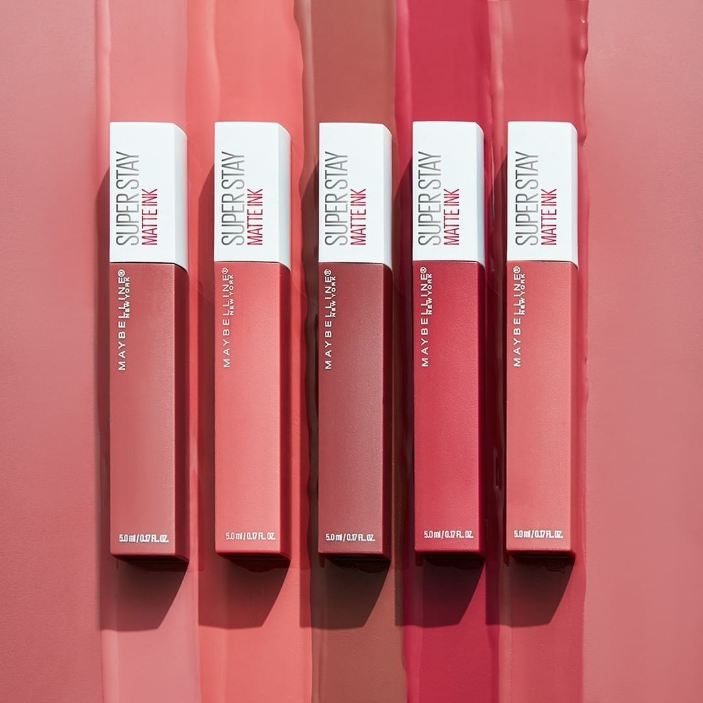

Principales tipos de pintalabios según su duración
Larga duración: más de seis horas en tus labios.
Permanentes: puedes llevarlos mas de 12 horas sin que se muevan de su sitio, incluso si comes,
bebes...
Desde mi experiencia los mejores pintalabios permanentes son los de la marca Maybelline.

Según su acabado
Acabado mate:no tiene brillos, con el que conseguirás en tus labios un color intenso
Acabado metalizado: dan un efecto de volumen y jugosidad, tonos intensos con una sola
pasada con colores muy favorecedores para cualquier tono de piel.
Acabado brillante: son extra hidratantes, son el producto ideal para convertir en brillante
cualquier
pintalabios y darles un toque aún más especial.